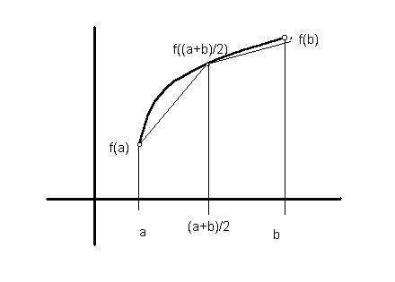

Suppose we want to calculate the integral from a to b of a continuous function f(x) that is non-negative over [a,b]. As you know from calculus, this is the area under the curve, bounded by a and b. We will calculate numerically an approximation to the integral, rather than using a closed-form solution from Maple. The method we will use is called adaptive quadrature.
The method is based on using the area of the trapezoid bounded by a,
b, f(a), and f(b) as an approximation for the area
under the curve between a and b.
Before accepting this trapezoidal area as a good approximation,
we compare the trapezoidal area to the sum of two other trapezoidal areas:
the trapezoid formed by
a, (a+b)/2, f(a), and f((a+b)/2),
and the trapezoid formed by
(a+b)/2, b, f((a+b)/2), and f(b).

If the sum of the areas of the two smaller trapezoids is close to the area of the larger trapezoid, then we accept the area of the larger trapezoid as a good approximation to the area under the curve. If on the other hand, the sum is not close, then we repeat the algorithm independently on each of the two smaller trapezoids. Note this is a recursive algorithm.
The input data consists of three double numbers: a, b, and epsilon. The function to integrate is defined in a separate class. You may parse these three numbers from the command line or read them from the keyboard or a file.
Try your program on these functions (epsilon of 0.0001): sin(x) from 0.1 to 1.0, tan(x) from 0.1 to 1.0, x**2 from 0.1 to 1.0, sqrt(x) from 0.1 to 1.0, and -log(x) from 0.1 to 1.0 (note this is the negative of the logrithm). Include these examples in your submitted sample output.
This algorithm coded in Java might not work well from 0.0 to b on some functions whose value at 0.0 is 0.0, so that is why 0.1 is used above. Since this is just a warm-up exercise and not a numerical methods class, we will not worry about this.
interface TheFunction {
public double evaluate(double x);
}
class MyFunction implements TheFunction {
public double evaluate(double x) { return x*x; }
}
class Sine implements TheFunction {
public double evaluate(double x) { return Math.sin(x); }
}
class Tangent implements TheFunction {
public double evaluate(double x) { return Math.tan(x); }
}
class AdaptiveQuad {
public static void main(String[] args) {
double a = (Double.valueOf(args[0])).doubleValue();
double b = (Double.valueOf(args[1])).doubleValue();
double epsilon = (Double.valueOf(args[2])).doubleValue();
...
TheFunction fn = (TheFunction) new MyFunction();
double result = area(a, b, epsilon, fn);
...
fn = (TheFunction) new Sine();
result = area(a, b, epsilon, fn);
...
fn = (TheFunction) new Tangent();
result = area(a, b, epsilon, fn);
...
}
public static double area(double p, double q, double epsilon, TheFunction f) {
if ... // the area in trapezoid [p,q] is close to the sum of the
... // areas in trapezoids [p,(p+q)/2] and [(p+q)/2,q];
... // use relative error to determine how close, that is,
... // x and y are close if abs((y-x)/x) < epsilon
... // to avoid dividing by zero, use abs(y-x) <= epsilon*x
return ... // the area of trapezoid [p,q]
else return area(p, (p+q)/2, epsilon, f)
+ area((p+q)/2, q, epsilon, f);
}
}
Animate your program using XtangoAnimator.